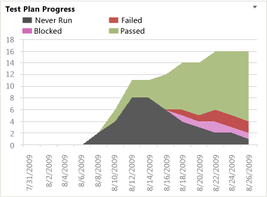

You can use the Test Plan Progress report to monitor test activities and report on the team's overall test progress. This report shows a burndown chart of the test results for all tests the team has defined for the team project for the most recent four weeks.
This report is available only when the team creates test plans and starts to run tests by using Test Runner and Microsoft Test Manager. For information about how to define test suites and test plans, see Organizing Test Cases Using Test Suites.
For information about how to access this report, see Excel Reports (GovDev).
|
|
|---|
|
You can view the Test Plan Progress from the Test or Quality dashboards. You can access these dashboards only if your team project portal has been enabled and is provisioned to use Microsoft Office SharePoint Server 2007. For more information, see Access a Team Project Portal and Process Guidance. |
|
In this topic |
Related topics |
|
|
|---|
|
A team uses test cases to define both manual and automated tests that it can run and manage by using Test Runner and Microsoft Test Manager. By using Microsoft Test Manager, you can create not only test cases but also test suites and test configurations that support testing your project. You can use test configurations to define how you want to run your Test Cases and test suites. You can group your test cases together by organizing them into a hierarchy of test suites in your test plan. By creating test suites, you can run sets of test cases as a group. For more information, see Defining Your Testing Effort Using Test Plans. |
Required Permissions
To view the report, you must be assigned or belong to a group that has been assigned the Read permissions in SharePoint Products for the team project.
To modify or customize the report, you must be a member of the TfsWarehouseDataReaders security role in SQL Server Analysis Services. You must also be assigned or belong to a group that has been assigned the Members permissions in SharePoint Products for the team project. For more information, see Grant Access to the Databases of the Data Warehouse for Visual Studio ALM and Managing Permissions.
 Data
in the Report
Data
in the Report
The team can review the Test Plan Progress report to help determine how much testing the team has completed and whether it is likely to finish test activities on time. As the following illustration shows, the report provides a stacked area graph of the results of all tests, grouped into their most recently recorded outcome within the most recent four weeks. Outcomes include Never Run, Blocked, Failed, or Passed.
The chart is based on a PivotTable report from data that is stored in the data warehouse. The data is derived from the results that are generated when members of the team run tests by using Microsoft Test Manager. For more information, see Running Tests.
Required Activities for Tracking Test Plan Progress
For the Test Plan Progress report to be useful and accurate, the team must perform the following activities:
-
Define test cases and test plans, and assign test cases to test plans. For more information, see Defining Your Testing Effort Using Test Plans.
-
For manual tests, mark the results of each validation step in the test case as passed or failed.
 Important
Important
Testers must mark a test step with a status if it is a validation test step. The overall result for a test case reflects the status of all the test steps that were marked. Therefore, the test case will have a status of failed if any test step is marked as failed or not marked.
For automated tests, each test is automatically marked as passed or failed.
-
(Optional) To support filtering, assign Iteration and Area paths to each test case.
Interpreting
the Report
You should expect the Test Plan Progress report to vary depending on where you are in your product development cycle. Early iterations should show a gradual increase in the number of test cases that pass. The team can review the report to find answers to the following questions:
-
How many tests are passing?
-
How many tests are failing?
-
How many tests are blocked?
-
How many tests have never run?
-
What percentage of tests are passing across all test plans?
-
How much testing has the team completed?
-
Is the team likely to finish the testing on time?
An ideal trend would show a steady increase in the number of Passed tests and a steady decrease in the number of Failed, Never Run, or Blocked tests. For information about healthy and unhealthy versions of the report, see Test Plan Progress Report.
Updating
and Customizing the Report
You can update the Test Plan Progress report by opening it in Office Excel and changing the filter options or a column field list for the PivotTable report. You can customize this report to support other views, as the following table describes.
|
View |
Action |
|---|---|
|
Test plan progress for an iteration |
Change the filter for TestResult.Iteration(default=All) |
|
Test plan progress for a product area |
Change the filter for TestResult.Area(default=All) |
|
Test plan progress for the most recent six, eight, or more weeks |
In the Columns PivotTable Field List, replace @@Last 4 weeks@@with a different Set |
For more information about how to work with and customize PivotTable and PivotChart reports, see the following pages on the Microsoft Web site: